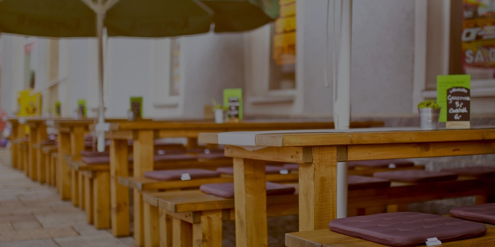
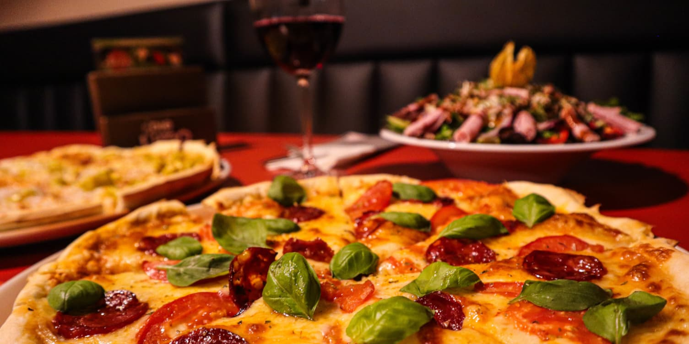
 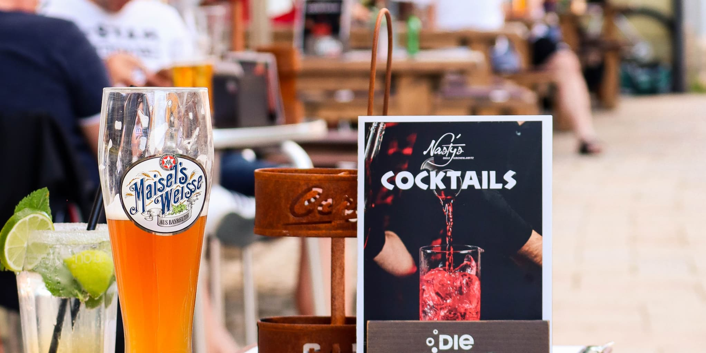
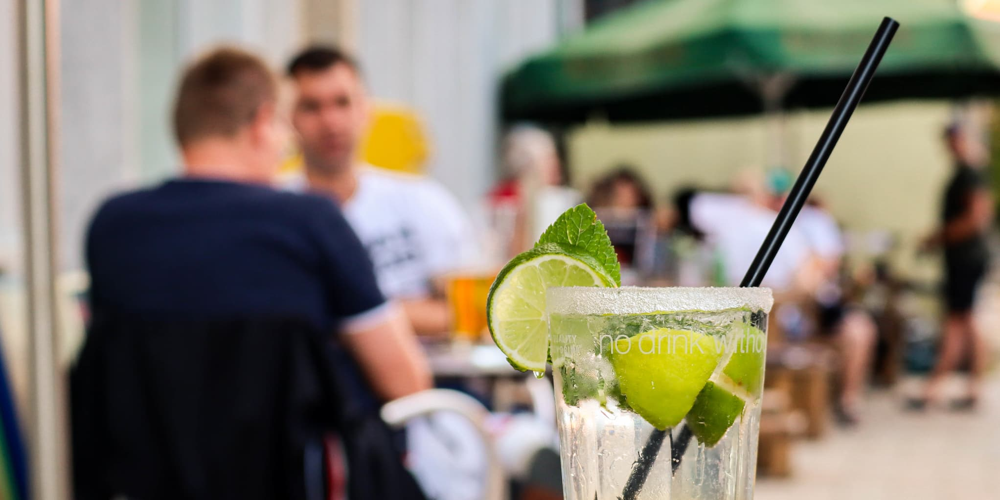
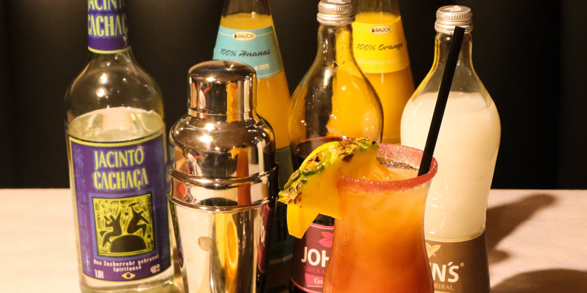
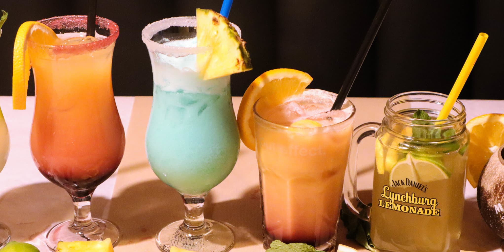
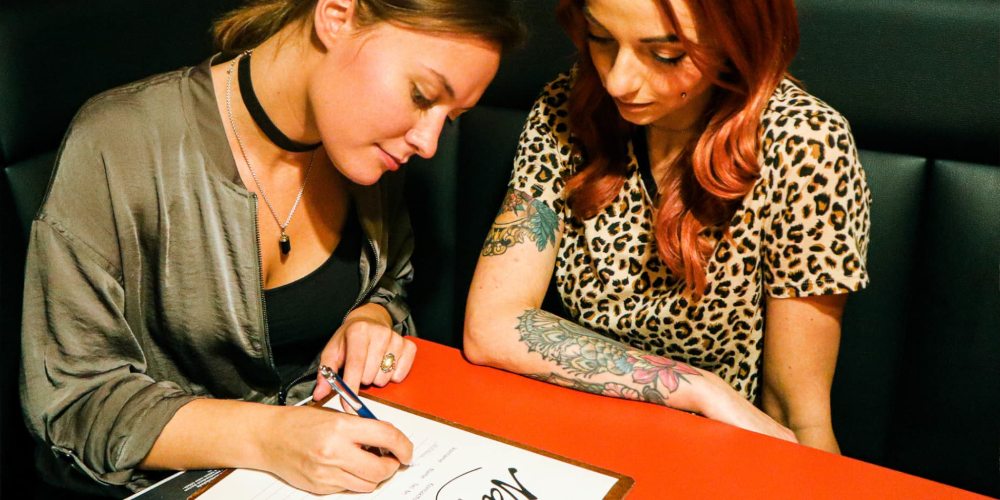
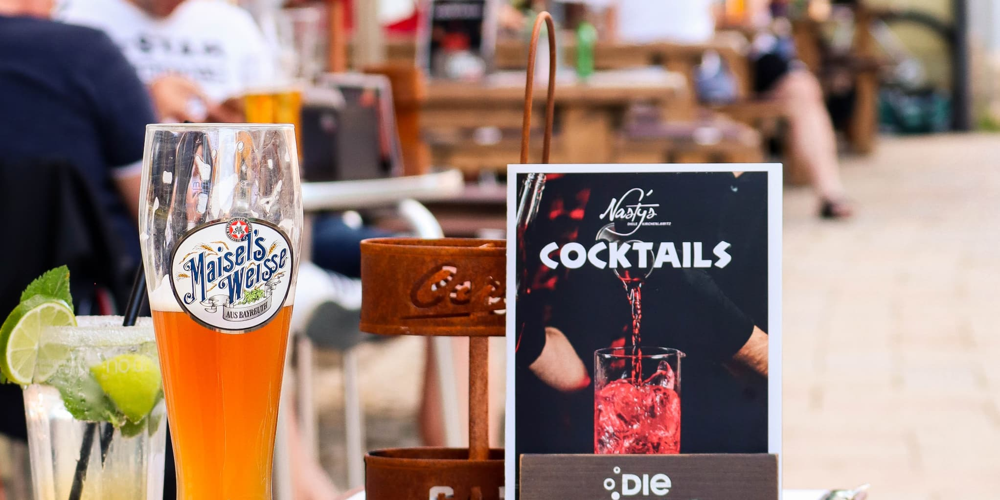
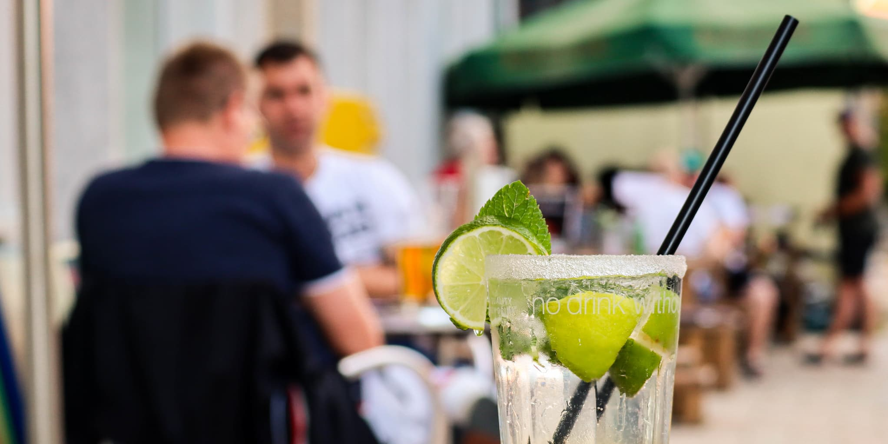
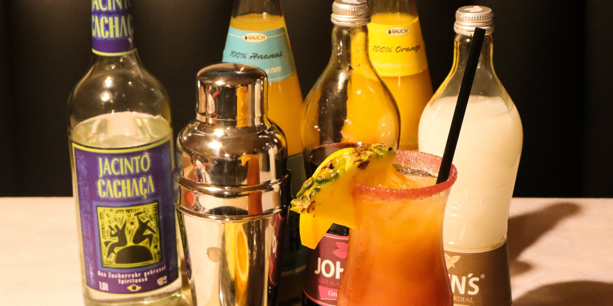
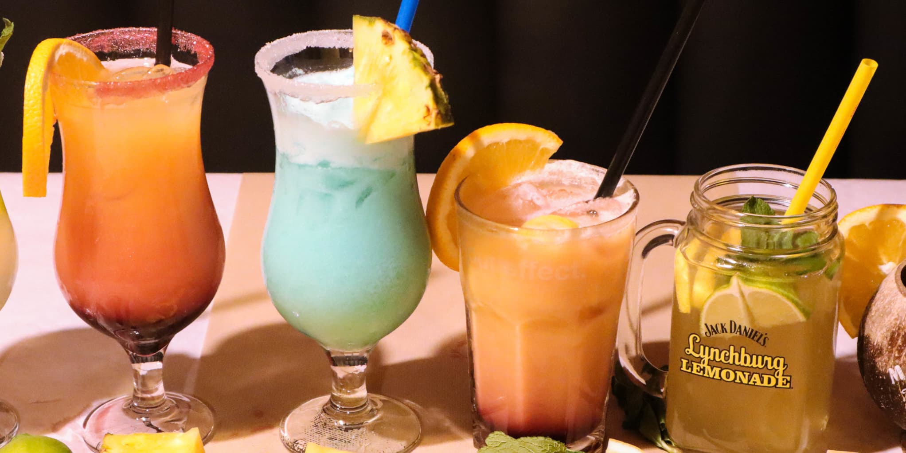
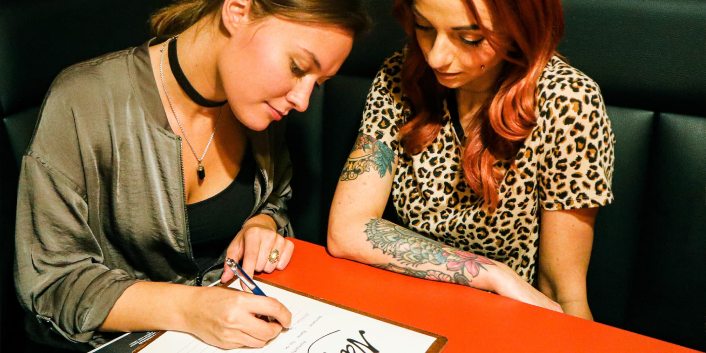
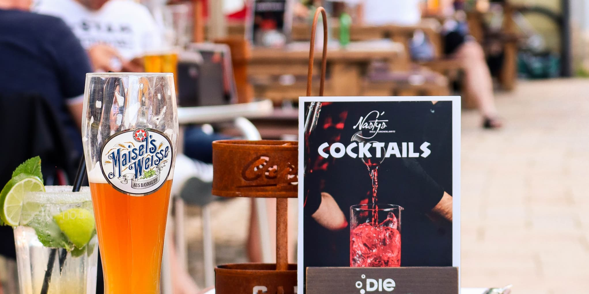
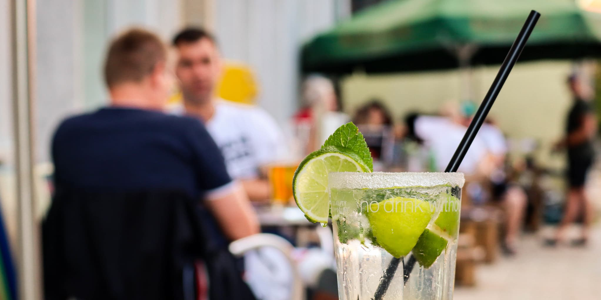
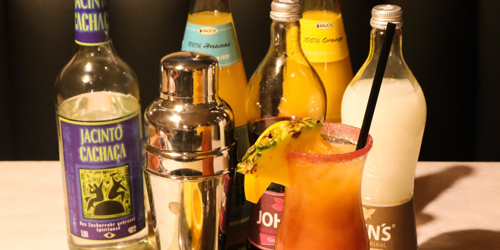
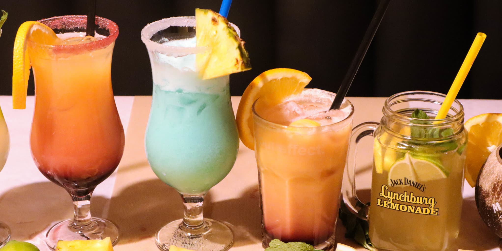
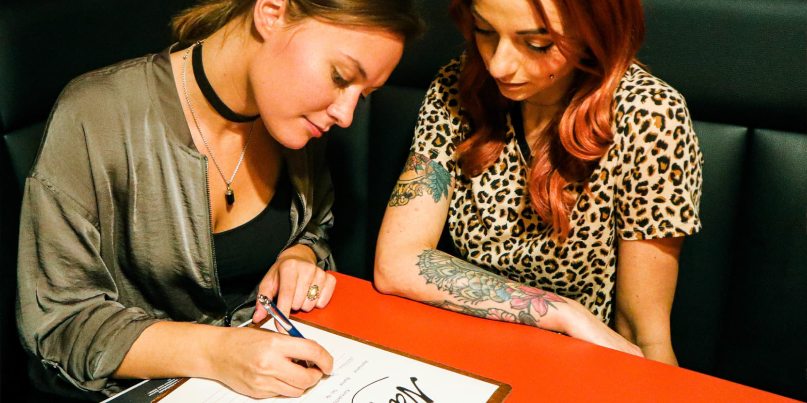
Öffnungszeiten
- Di: 16:30 – 22:00 Uhr
- Do/Fr/Sa: 16:30 – 01:00 Uhr
- So: 16:30 – 22:00 Uhr
Warme Küche je bis 21:00 Uhr
Adresse
Weißenstädter Str. 295158 Kirchenlamitz
Parkplätze findest du direkt am Marktplatz oder in den umliegenden Straßen.
Direkt am Marktplatz von Kirchenlamitz
Michael ist das Herz und die Seele von Nasty's Diele. Seit der Gründung im Jahr hat er die Bar mit Leidenschaft, Kreativität und viel Herzblut zu dem gemacht, was sie heute ist: Ein lebendiger Treffpunkt für Jung und Alt, für Einheimische und Gäste. Seine Philosophie: Jeder Gast soll sich wie zuhause fühlen, egal ob beim Feierabendbier, bei Events oder einfach auf einen Plausch an der Theke. Die Geschichte der Diele ist eng mit Michaels Engagement und Liebe zum Fichtelgebirge verbunden.